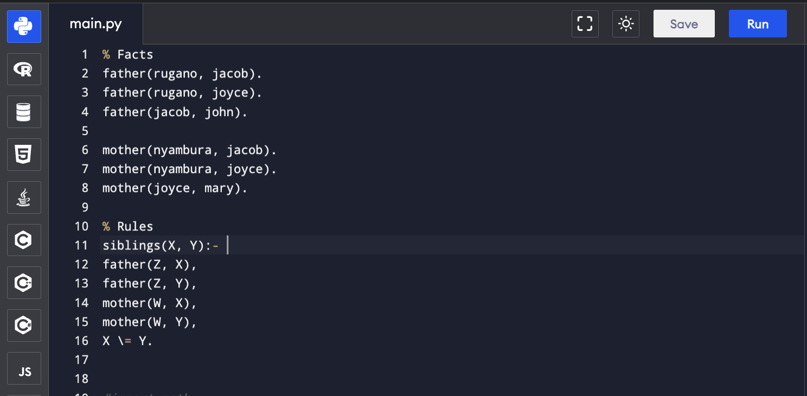
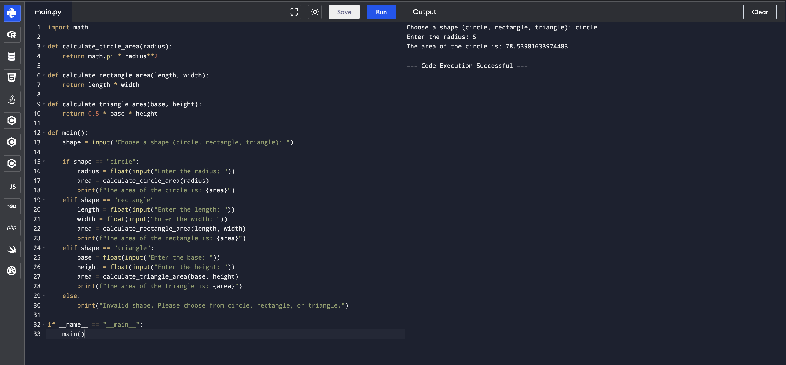
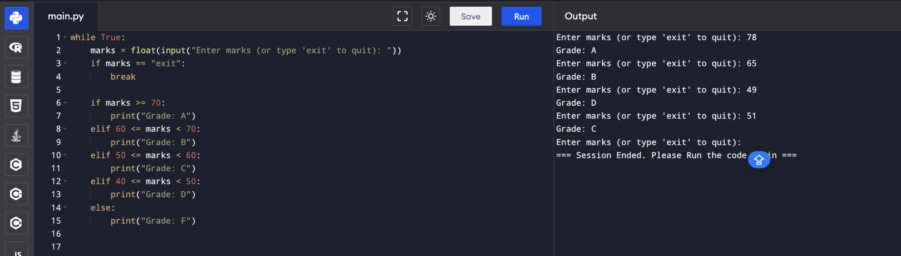

About Me
My name is Jacob Maina, and I'm a student at United States International University, training on software development focusing on all programming languages. I hold a first degree in Projects Planning and Management from Moi University. As a junior upcoming developer, I've developed several projects, the screenshots of which you can find below.
Family Tree Prolog
Family Tree using Prolog: This is a knowledge base that includes facts and relationships about your family, extending to a minimum of four generations . The rules include who are : siblings(); father(); mother(), implemented as a Family Tree in Prolog. The program answers queries such as: mother(X, Y); siblings(X,Y);
Area of a shape.
A python program that calculates the Area of a Shape. The program prompts the user to choose the shape, and then enter the required variables. If a user chooses a circle shape, then the program prompts for the radius. Once the user enter the radius, the program then calculates and displays the area. The program is implemented in python programming languages.
Student grading program
This is a Grading Program that takes marks as input and awards the appropriate grade based on USIU's grading system. It has the necessary control statements. The program continues taking marks input from the user and displays the appropriate grades, and terminate Only upon the user's command.